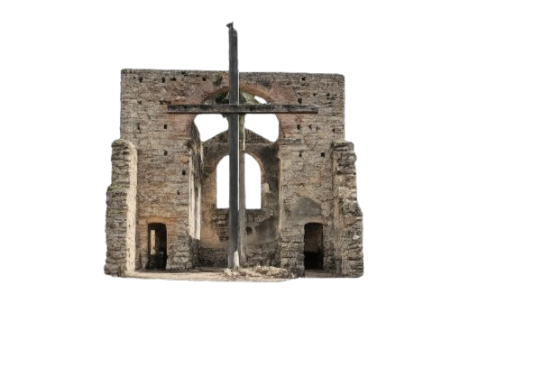
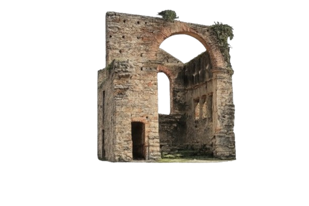

A Igreja Velha de São Mateus é um dos patrimônios históricos mais importantes da cidade de São Mateus. Construída durante o período colonial, por volta do século XVII, a igreja representa o início da ocupação e do desenvolvimento da região norte do Espírito Santo.
Na época, a igreja desempenhava um papel fundamental na vida da comunidade, sendo não apenas um local de fé e celebrações religiosas, mas também um ponto de encontro social e cultural para os moradores da vila.
Sua arquitetura simples, marcada pela influência colonial portuguesa, reflete o estilo das primeiras construções religiosas erguidas no Brasil. Ao longo dos anos, a igreja sofreu desgastes causados pelo tempo, permanecendo hoje em ruínas, mas conservando grande valor histórico e simbólico.
Mesmo em ruínas, a Igreja Velha continua sendo um importante marco cultural, atraindo visitantes e preservando a memória das origens da cidade. O local representa a força da história, da fé e da identidade do povo mateense.
Visitar a Igreja Velha é revisitar parte da história de São Mateus e reconhecer a importância da preservação do patrimônio histórico para as futuras gerações.
